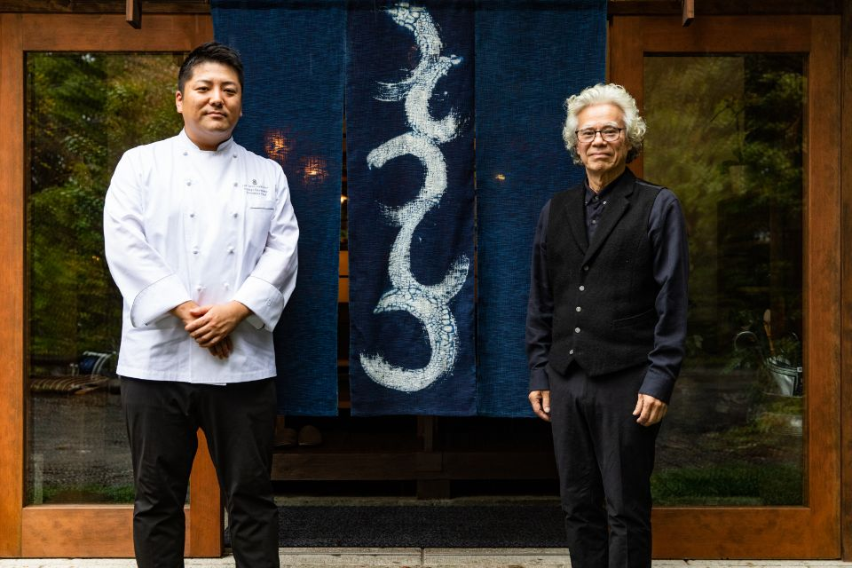
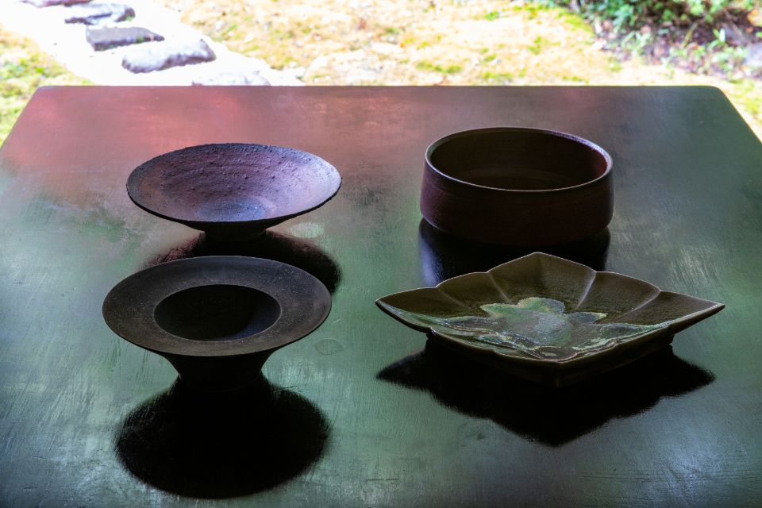
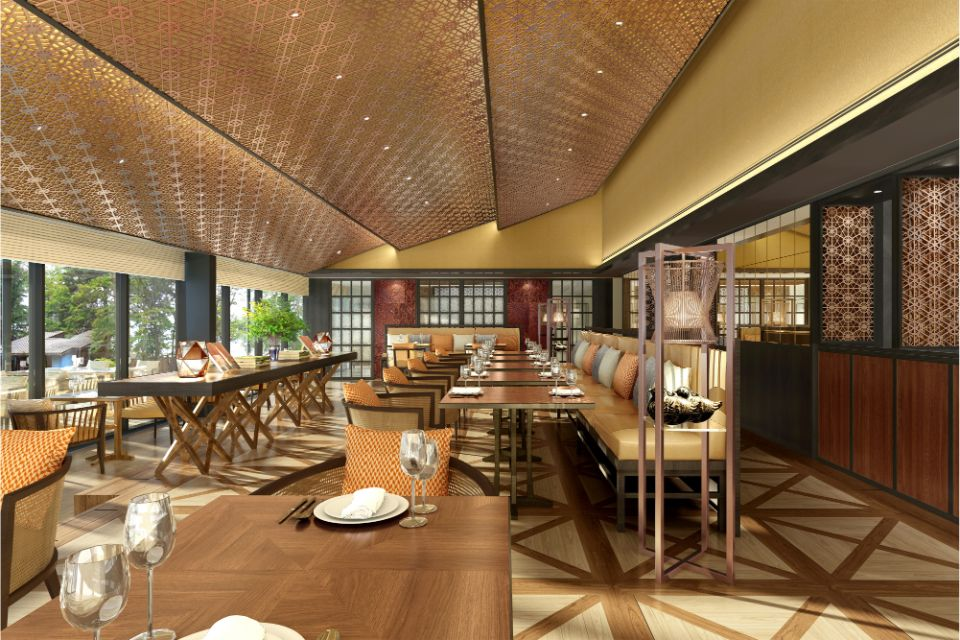
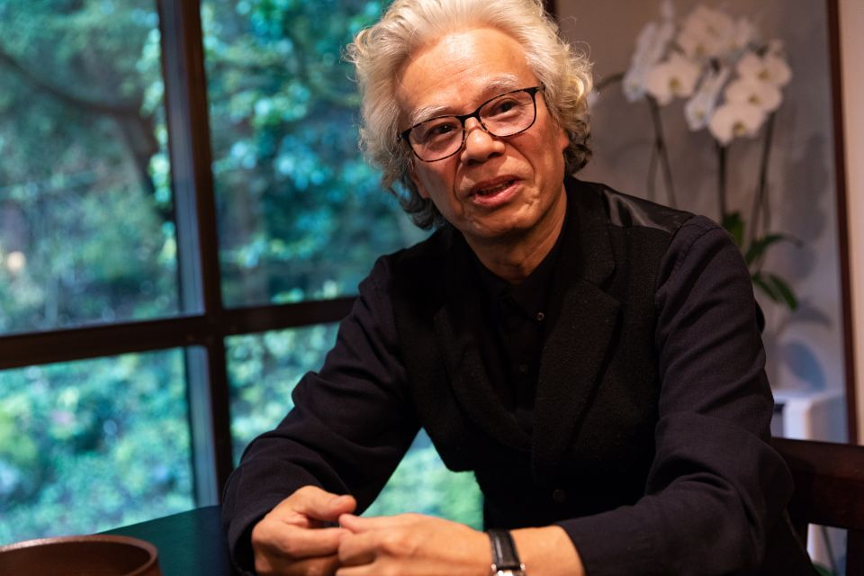
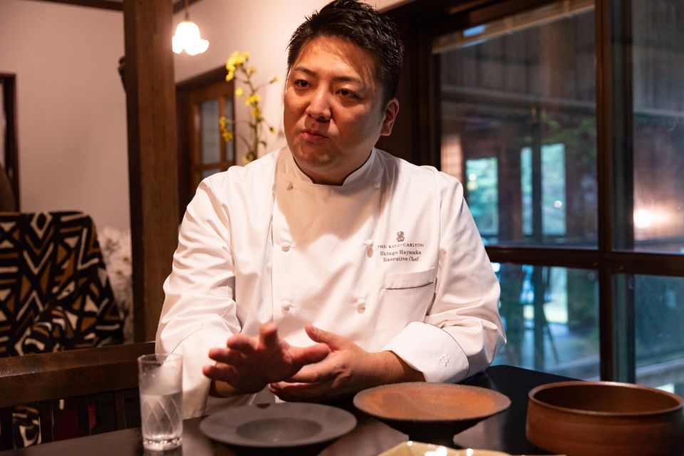
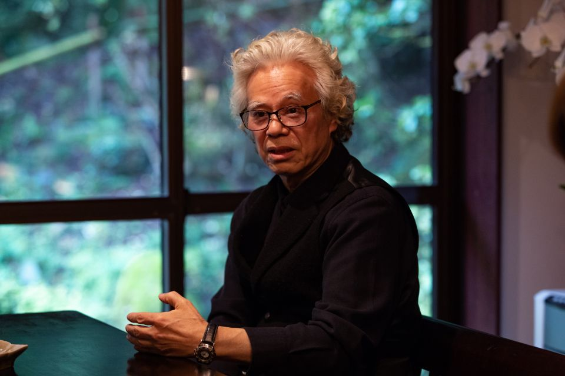
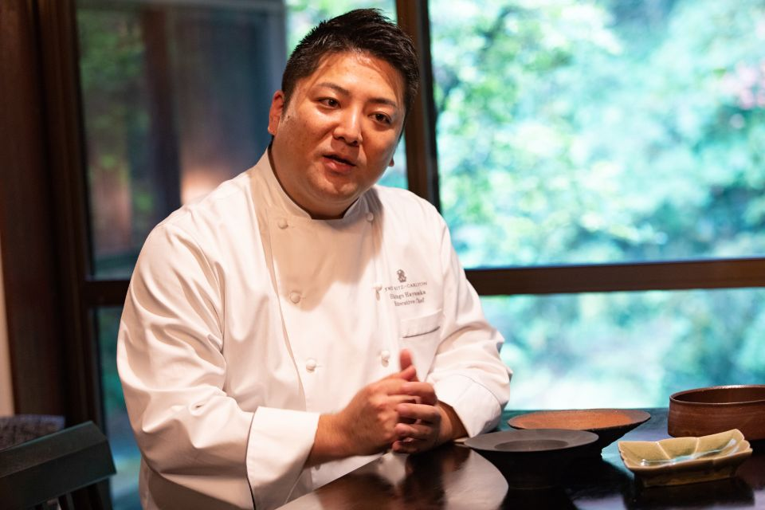

Префектура Тотиги · Никко · еда и керамика
The Ritz-Carlton, Nikko: керамика Масико и продукты Тотиги на берегу озера Тюдзэндзи

Отель The Ritz-Carlton, Nikko открылся 15 июля 2020 года на берегу озера Тюдзэндзи. В японском ресторане отеля блюда из продуктов Тотиги подают на керамике Масико, и эту посуду придумывали вместе керамист и шеф-повар.
Отель
У озера под горой Нантай
The Ritz-Carlton, Nikko стоит в национальном парке Никко, прямо на берегу горного озера Тюдзэндзи. Над водой поднимается гора Нантай, священная для храмов и святилищ Никко, которые внесены в список Всемирного наследия ЮНЕСКО. Отель построили так, чтобы его залы сливались с этим пейзажем: природой и многовековой историей края.
Рестораны отеля выходят в зелёный сад. Их два, японский и европейский, а ещё есть бар и лаунж. В японском ресторане блюда из продуктов префектуры Тотиги подают на посуде из Масико, гончарного городка в той же префектуре. В 2019 году, ещё до открытия, о том, как появилась эта посуда, рассказали двое: керамист Кэн Мацудзаки, руководитель проекта GENDO, и шеф-повар Синго Хаясака, которому предстояло возглавить всю кухню отеля.
Керамика
GENDO: посуда, сделанная вместе с поваром

Всё началось в июне 2019 года. На выставку Кэна Мацудзаки в токийском районе Гиндза пришли шеф-повар Синго Хаясака и сотрудники будущего отеля: их заинтересовала новая марка GENDO, которую керамист основал в Масико.
GENDO задуман как проект для молодых гончаров. Мастера делают оригинальную посуду, в основном для европейской кухни, и прислушиваются к мнению поваров. Название записывается иероглифами «первозданная глина», то есть глина в том виде, в каком её только что выкопали.
«Керамика Масико это мир, который уже создали предшественники, Сёдзи Хамада и Тацудзо Симаока. Но если думать о следующих ста годах, то, чтобы сохранить суть Масико и рассказать о ней миру, нужны силы молодых мастеров»
Кэн Мацудзаки
Сёдзи Хамада (1894–1978) и Тацудзо Симаока (1919–2007) были гончарами Масико, чьими работами прославилась здешняя керамика; Симаока, учитель Кэна Мацудзаки, носил звание «живого национального сокровища». Главная тема GENDO звучит как «жизнь в согласии с природой»: понять, как важна глина, основа всякой керамики, и делать посуду, какая может родиться только в Масико.
Для шеф-повара эта мысль оказалась близкой. Жизнь в согласии с природой, по его словам, важна и для кухни, и один из её путей в том, чтобы есть то, что выросло рядом. В ресторанах отеля решили широко использовать продукты Тотиги, а чтобы показать гостям из Японии и других стран всё лучшее в префектуре, и посуду взять местную. GENDO привлёк его и тем, что берёт материал края таким, какой он есть, и тем, что поддерживает молодых мастеров: в сельском хозяйстве Японии тоже не хватает преемников.

Работа
Сто видов посуды от пяти мастеров
Задача звучала так: посуда, на которой можно подавать и японские, и европейские блюда. Пять молодых мастеров GENDO сделали образцы, а шеф-повар выбрал из них то, что нужно ресторану. У того, кто делает, и у того, кто пользуется, ожидания всегда немного расходятся, поэтому мастера и повар долго обсуждали каждую вещь, пока не нашли общее решение. Всего получилось около ста видов посуды, и в каждом виден характер своего автора.
«Сейчас в Масико много милой посуды. Это модно, вот все её и делают. Но если гнаться только за модой, уходишь от настоящей керамики Масико, и такая керамика не перейдёт к следующему поколению. Важно делать то, что действительно хочется сделать, то, что действительно хорошо, и растить таких мастеров»
Кэн Мацудзаки


Кухня
Сначала посуда, потом блюдо
Обычно повар подбирает посуду к блюду, но бывает и наоборот. Здесь случай второй: сначала была посуда. В 2019 году шеф-повар ещё объезжал производителей и изучал продукты Тотиги, поэтому меню называть не спешил. Увидев керамику впервые, он подумал, что ей подойдут простые блюда без лишних украшений, где продукт остаётся самим собой. Например, такие, где ярко смотрится красная клубника. Ещё одна его идея: перевернуть тарелку и выложить еду на дно.
«Граница между японской и европейской кухней уже стёрлась. Мастер не думает, что положат в его посуду: если ограничить, дальше ничего не вырастет. Мне интересно ждать, что в ней подадут, и иногда я удивляюсь, что так тоже можно»
Кэн Мацудзаки
Шеф-повар хотел подавать еду так, чтобы мастер, увидев свою посуду с блюдом, радовался и удивлялся. Повар даже ждал, что мастер бросит ему вызов: «Это сложно, но попробуй», и керамиста эта мысль со смехом увлекла. Повар задумал и другие мероприятия, например приготовить блюдо за ограниченное время из выданных продуктов на выданной посуде.


«Жить в согласии не только с природой, но и с теми, кто делает: с мастерами Масико, с производителями еды в Тотиги. И рассказывать о Тотиги всему миру. В этом, по-моему, один из смыслов того, что здесь появился The Ritz-Carlton, Nikko»
Синго Хаясака
Для GENDO заказ отеля стал первой работой. Чтобы передать керамику Масико будущим поколениям, по словам Кэна Мацудзаки, нужно, чтобы все работали вместе и не останавливались. В 2026 году в японском ресторане отеля по-прежнему подавали кайсэки на керамике Масико.
The Ritz-Carlton, Nikko
- Адрес
- префектура Тотиги, Никко, Тюгуси, 2482
- Номера
- 94
Фото: Ясухико Роппонги.